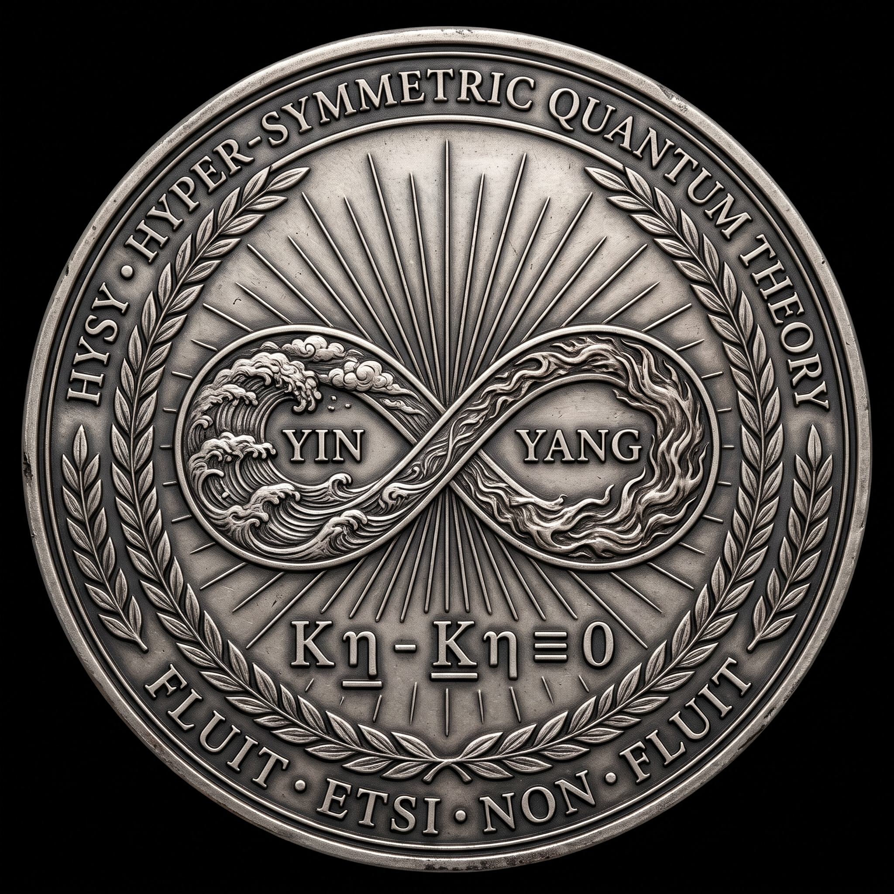

TRAM HYSY
Home
Politica
Scienza
Poesia

HYSY
Architettura del framework e capitoli principali della sezione scientifica.
Divulgativo
Video introduttivo: VIAGGIO NELL'APEIRON
→
Filosofia
Ontologia relazionale e fondamenti
→
Fisica e Matematica
Sintesi teorica, algebra e derivazione quantistica
→
Ontologia Informatica
Strutture informative e modellazione
→
Conclusioni
Chiusura e prospettive del framework
→
 TRAM HYSY
TRAM HYSY